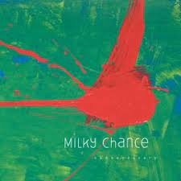

"El cuarteto de nos"
Discription: El Cuarteto de Nos is a Uruguayan rock band known for their eclectic musical style and thought-provoking lyrics. Formed in Montevideo in the early 1980s, the band has undergone various lineup changes over the years but has consistently maintained a unique sound characterized by a fusion of rock, pop, funk, and other genres. Led by the charismatic vocalist and lyricist Roberto Musso, El Cuarteto de Nos often explores themes ranging from social commentary to existential introspection in their songs, earning them a devoted following both in Uruguay and internationally. With their innovative approach to music and thought-provoking lyrical content, El Cuarteto de Nos continues to push boundaries and captivate audiences around the world.

"Mac DeMarco"
Discription: Mac DeMarco is a Canadian singer-songwriter, multi-instrumentalist, and producer known for his laid-back, indie rock sound and quirky persona. Born in British Columbia, DeMarco gained prominence with his breakthrough album "2" in 2012, followed by critically acclaimed releases such as "Salad Days" (2014) and "This Old Dog" (2017). His music is characterized by jangly guitar riffs, catchy melodies, and lo-fi production, drawing inspiration from genres like indie rock, psychedelic rock, and folk. DeMarco's charm and humor, both on and off stage, have also contributed to his popularity, making him a beloved figure in the indie music scene.
"Patrick Watson"
Discription:
"Patrick Watson is a Canadian singer-songwriter and multi-instrumentalist revered for his hauntingly beautiful vocals, intricate compositions, and ethereal indie folk soundscapes, creating music that is both introspective and mesmerizing."
"Metronomy"
Discription:
"Metronomy is a British electronic music group acclaimed for their eclectic blend of indie pop, dance, and electronic elements, characterized by catchy melodies, funky rhythms, and inventive production techniques that make for an irresistibly groovy sound."
"Molchatdoma"
Discription:
"Molchat Doma is a Belarusian post-punk band known for their atmospheric soundscapes, melancholic vocals, and introspective lyrics, creating a captivating blend of nostalgia and modernity that resonates with audiences worldwide."
"Smith"
Discription:
"Smith" is a common surname, and without further context, it's difficult to provide a specific description. However, if you're referring to a band or a specific individual named "Smith," please provide additional details, and I'd be happy to assist you further.

"stolendance"
Discription: Mac DeMarco is a Canadian singer-songwriter, multi-instrumentalist, and producer known for his laid-back, indie rock sound and quirky persona. Born in British Columbia, DeMarco gained prominence with his breakthrough album "2" in 2012, followed by critically acclaimed releases such as "Salad Days" (2014) and "This Old Dog" (2017). His music is characterized by jangly guitar riffs, catchy melodies, and lo-fi production, drawing inspiration from genres like indie rock, psychedelic rock, and folk. DeMarco's charm and humor, both on and off stage, have also contributed to his popularity, making him a beloved figure in the indie music scene.
"stolendance"
Discription:
Milky Chance is a German folk-pop duo known for their catchy melodies, laid-back vibe, and eclectic blend of folk, reggae, and electronic elements. With their distinctive sound and infectious hooks, Milky Chance has garnered international acclaim, captivating audiences with their unique musical style and charismatic performances.
"Videoclub"
Discription: "Amour Plastique is a renowned French indie pop band distinguished by their captivating melodies, ethereal vocals, and vibrant synth-driven arrangements, captivating audiences with their unique blend of dreamy soundscapes and infectious energy."
"Bloc Party"
Discription: "Bloc Party is a British indie rock band revered for their distinctive blend of angular guitar riffs, pulsating rhythms, and introspective lyrics, crafting a sound that's both dynamic and emotionally resonant."
"Nasa histories"
Discription: "Bugambilia is a Mexican indie band recognized for their fusion of traditional Latin rhythms with modern indie pop sensibilities, creating a vibrant and eclectic sound that resonates with audiences both locally and internationally."
"Pomme"
Discription:
"Pomme is a talented French singer-songwriter celebrated for her poetic lyrics, haunting vocals, and intimate folk-pop melodies, captivating listeners with her introspective storytelling and emotive performances."
"The Synnthetic Heart"
Discription:
"The Synnthetic Heart is an emerging electronic music duo known for their innovative blend of synth-pop and futuristic soundscapes, crafting mesmerizing compositions that seamlessly merge catchy melodies with intricate production."
"Florence and the Machine
"
Discription:
"Florence and the Machine is a British indie rock band led by the powerful vocals of Florence Welch, renowned for their anthemic songs, theatrical performances, and lush, orchestral arrangements that evoke a sense of grandeur and emotion."
"Sales"
Discription: "Sales" is also the name of an American indie pop duo consisting of Lauren Morgan and Jordan Shih. Formed in 2013 in Orlando, Florida, Sales gained attention for their dreamy, lo-fi sound characterized by minimalist arrangements, catchy melodies, and Morgan's ethereal vocals. Their music often features a blend of indie pop, electronic, and folk influences. Sales has released several EPs and albums, including their self-titled debut album "SALES" in 2016 and "Forever & Ever" in 2021. The duo has garnered a dedicated fanbase and critical acclaim for their unique musical style and intimate songwriting.